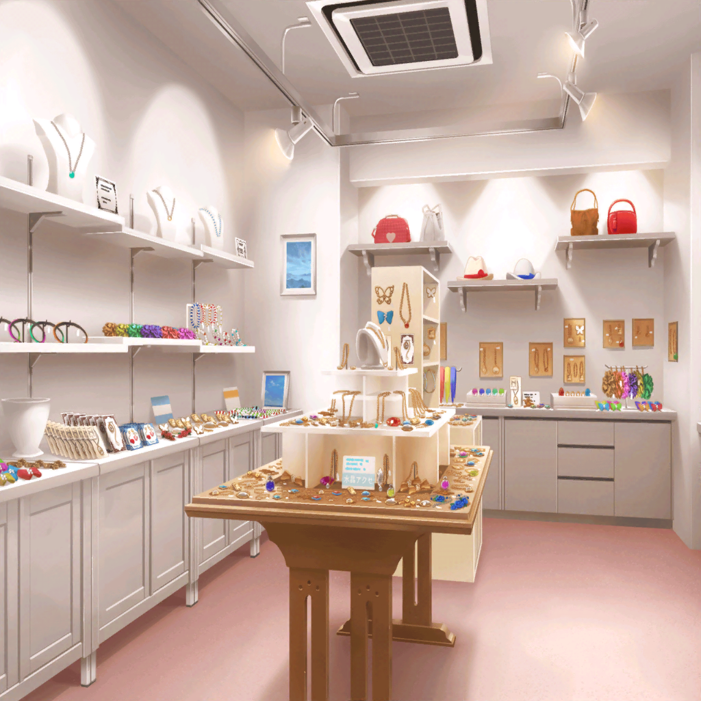

雑貨屋
イヴ
ふふ～ん、ふんふふん、ふふ～ん♪
イヴ
やっぱり雑貨屋さんは見ているだけで楽しくなってきますね～♪
イヴ
あ、この刀のキーホルダー！
いろいろな形があるんですね！
イヴ
ややっ！ これは手裏剣メモ帳！
お土産によさそうです！
イヴ
これは……マリモのミニ水槽？
緑で丸くて可愛いですね～♪
イヴ
あ、このアロマキャンドルもいい香り……
イヴ
う～ん……いろいろありすぎて迷っちゃいます……
イヴ
何を買おうかなぁ……
有咲
……さっきから何をひとりで喋ってんだ？
イヴ
ひゃあ！？
有咲
な、なんだよ！？
イヴ
あ、アリサさん！
こんなところで会うなんて奇遇ですね！
イヴ
アリサさんもお買い物ですか？
有咲
まあ、買い物というか……
暇だったからブラブラしてるだけだよ
有咲
そういうイヴも買い物なのか？
イヴ
はい！
今日はお休みですし、何か可愛い雑貨が欲しいなって
イヴ
こういうお店は楽しいですよね！
毎日でも来たくなっちゃいます♪
有咲
毎日はどうかと思うけど、
何かしら発見があるから、私も結構好きかな
有咲
……お、このヘアゴム可愛いな
イヴ
こちらの納豆巻きのクッションも素敵ですよ！
有咲
なんだそりゃ……ってマジで納豆巻きのクッションかよ！？
すごいデザインだなこれ……
イヴ
あ！ アリサさん、見てくださいこれ！
イヴ
ほらこれ！
ウサギさんのぬいぐるみです！
有咲
おお……なかなか可愛いじゃん……
イヴ
このウサギさんを見ていると、
一緒に捕まえた時のことを思い出しますね
有咲
ああ、この間のか
有咲
……はぁ
イヴ
な、なんでため息を……？
有咲
いや、あの時はマジで大変だったと思って
有咲
もう校内を走り回るなんてごめんだよ……
イヴ
あはは……
確かに大変でしたね！
イヴ
でも最終的にウサギさんを小屋に戻せたのはよかったです
イヴ
何よりウサギさんが戻って飼育係さんが
元気になったことが一番うれしかったです！
イヴ
ブシドーとは困っている人を助けること！
また一歩、本当のブシドーに近づくことができた気がします！
有咲
ブシドーに近づけたかは知らないけど……
有咲
まあ、感謝されて悪い気はしないよな
イヴ
はい、とてもうれしかったです！
有咲
んじゃ、私はこの辺で。
あまり無駄遣いしないように気をつけろよ
イヴ
ええ～、もう行っちゃうんですか？
イヴ
私、アリサさんと一緒にお買い物したいです……
有咲
なっ……！？
有咲
し、仕方ねーな。
じゃあ、ちょっとだけだぞ？
イヴ
わぁ、ありがとうございますアリサさん！
イヴ
それじゃあ、次はどのお店に行きましょう！